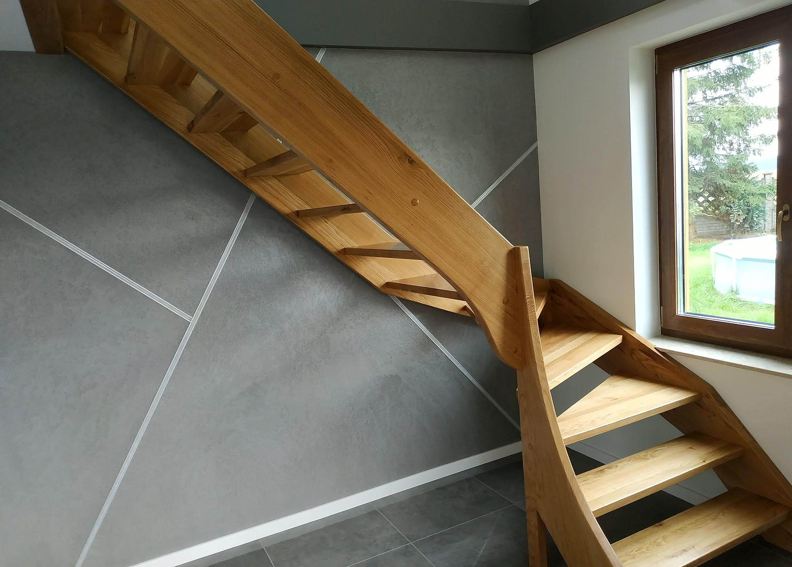
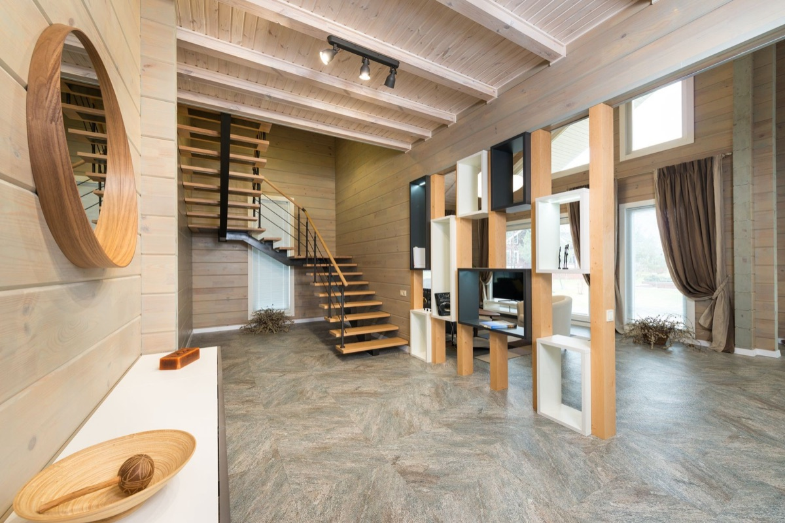
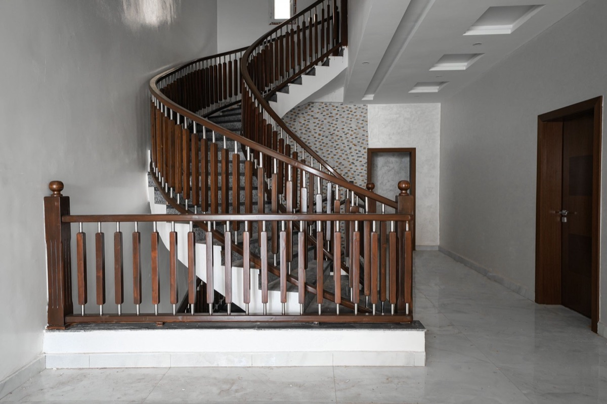
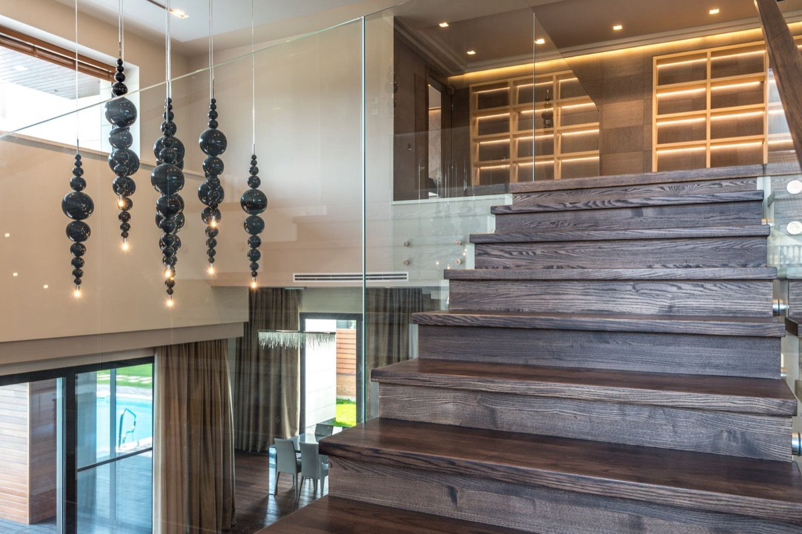
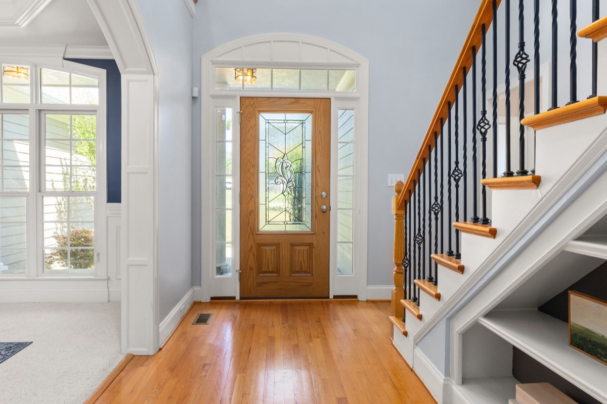
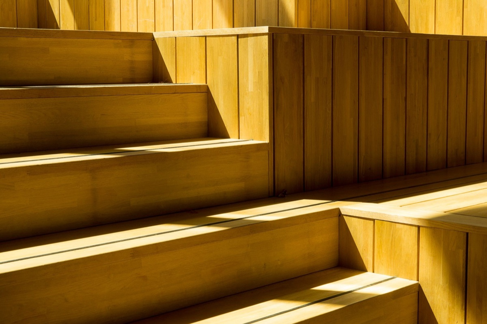

Schody
na wymiar
Schody, po których chodzi się codziennie, robimy pod wymiar konkretnego domu. Pomiar, wykonanie i montaż. Pracujemy spod Wolsztyna.
5,0w opiniach GoogleRobimy drewniane schody na wymiar: ażurowe na policzkach, zabiegowe z balustradą i stopnie z drewna na betonowych schodach. Wymiar bierzemy na miejscu, a termin ustalamy przy zamówieniu i go trzymamy. W 2026 roku zostaliśmy laureatem plebiscytu Orły Stolarstwa.


Inspiracje
Rozwiązania, o które najczęściej pytają klienci.


Prowadzimy Cię od pomiaru do ostatniego stopnia.

Schody ażurowe na policzkach →
Stopnie bez podstopnic, osadzone między dwoma drewnianymi policzkami. Światło przechodzi między stopniami, więc schody nie przytłaczają wnętrza.

Schody zabiegowe z balustradą →
Bieg z zakrętem tam, gdzie prosty się nie mieści. Stopnie na zakręcie rozrysowujemy tak, żeby stopa stawała wygodnie.

Drewno na schodach betonowych →
Beton zostaje jako mocna baza, a pod stopą masz ciepłe stopnie. Wymiar bierzemy na miejscu, bo betonowe stopnie rzadko są równe.

Balustrady: drewno, stal, szkło →
Balustradę dobieramy razem ze schodami: drewniane tralki, białe stalowe pręty albo szkło, które zostawia klatkę schodową jasną.

Dobór drewna i wykończenia →
Kolor stopni ma grać z podłogą, drzwiami i ścianą. Pomagamy dobrać drewno i wykończenie, a przy okazji materiały do reszty domu.
„Pełen profesjonalizm w wykonaniu p.Dawida, terminowa i solidna praca, a także dodatkowe wsparcie przy dobraniu materiałów do wykończenia pozostałych elementów domu.”Michał Żok · opinia w Google
„Bardzo profesjonalna firma, godna polecenia. Jesteśmy bardzo zadowoleni.”Krzysztof Belcarz · opinia w Google

Opinie
Zadzwoń albo napisz. Powiemy, co da się zrobić w Twoim domu, i umówimy pomiar.
Zadzwoń → Napisz do nas